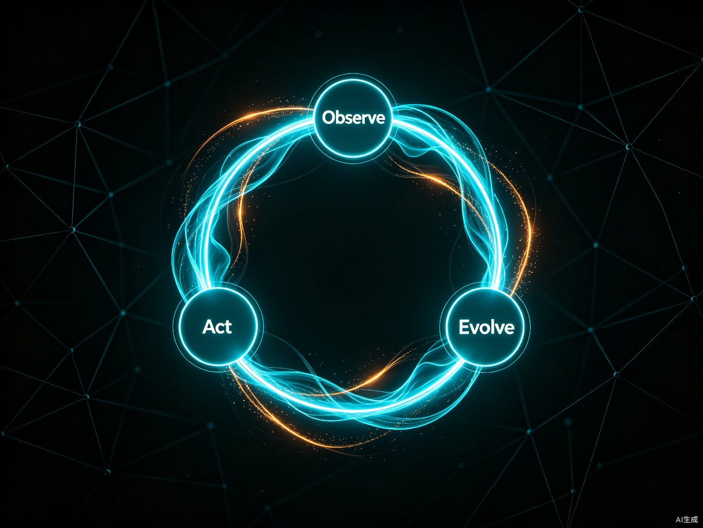

构建一个 AI 智能体原型可能只需几分钟，甚至几秒钟。但把这个惊艳的演示版本转化为企业可以信赖的生产级系统，真正的挑战才刚刚开始[1]。
2026 年量子位 MEET 大会披露了一组刺眼的数据：93% 的企业 Agent 项目卡在了从 POC（概念验证）到生产的最后一公里[2]。另一份行业调研给出了更悲观的数据——只有 10% 的 AI 项目真正实现规模化应用，IDC 预测 2026 年仍将有 50% 的 AI 应用达不到预期 ROI[3]。换言之，每 10 个 AI 项目里，有 9 个走不到生产环境；即便走上去了，也有一半达不到预期回报。
这不是技术不够强的问题。GPT-4、Claude Opus 4.6、Gemini 2.5 都已经足够聪明，写文章、画图、写代码、做推理，每一项都超越了大部分人类。但聪明不等于可靠，能 demo 不等于能生产。问题出在哪里？出在从「能用」到「好用」、从「演示」到「交付」的那段距离——这就是 AI 的「最后一公里」。
本文要回答的核心问题是：一个已经跑通 POC 的 AI 项目，到底需要补上哪些功课，才能真正稳定地跑在生产环境里？答案藏在六个字里：数据、评估、工程。
一、最后一公里到底卡在哪
要破局，先定位。把 93% 这个数字拆开看，会发现最后一公里的卡点不是单一的，而是多个断层叠加。
| POC 阶段 | 生产阶段 | 断层本质 |
|---|---|---|
| 数据精心挑选，质量高 | 数据来自真实世界，噪声多 | 数据质量落差 |
| 只看效果，不问成本 | 必须算清延迟、token 成本、GPU 占用 | 成本与性能矛盾 |
| 单次调用，无需扩容 | 高并发、有状态、长会话 | 工程化能力缺失 |
| 人工兜底，错了重来 | 自主决策，错了就是业务事故 | 安全与责任真空 |
| 效果好不好，人说了算 | 需要量化评估、持续监控 | 评估体系空白 |
| 代码改完即上线 | 需要 CI/CD、灰度、回滚 | 部署流程缺位 |
这张表想说明的不是「POC 太粗糙」，而是生产环境对 AI 系统的要求，与 POC 阶段的关注点几乎完全错位。一个在 POC 阶段表现优异的 Agent，到了生产环境突然「不行了」，往往不是模型变笨了，而是它从未被设计来应对真实世界的复杂性[2]。
亚马逊云科技大中华区产品部总经理陈晓建在 MEET2026 大会上把原因归结为两点：数据质量落差和工程化能力缺失[2]。这两个原因覆盖了 93% 失败案例中的绝大多数。下面六节，我们就围绕这两条主线，逐个拆解破局点。
二、数据质量落差：从精心挑选到真实泥潭
POC 阶段的 Demo 为什么好看？因为数据是挑过的。几条精心准备的 case，几个完美的 prompt，模型表现自然惊艳。但生产环境的数据不是这样——用户会问意想不到的问题，输入会带各种噪声，边缘 case 层出不穷[2]。
这是 POC 与生产效果差异的核心原因。破局的关键不是「找更好的数据」，而是建立数据闭环——让生产环境的数据反哺模型与 prompt 的迭代。
这个闭环的核心价值在于：每一次生产环境的失败，都变成下一次迭代的燃料。一个成熟的 AI 团队，通常每 1-2 周能跑完一次完整闭环。制造业的实践给出了量化证据——某 PCB 厂的 AI 视觉质检系统，通过持续的数据闭环迭代，缺陷漏检率从 1.2% 降至 0.15%；外观检测每 2 周迭代一次，检出率从 92% 提升到 98.5%[3]。
三、评估门控部署：上线前的三道质量门
传统软件有单元测试、集成测试、压测，但 AI 系统的测试方式完全不同。一个 Agent 的所有工具都可能通过单元测试，但它仍然可能因为选错工具或产生幻觉而造成灾难[1]。这就是为什么需要「评估门控部署」（Evaluation-Gated Deployment）——在任何版本接触真实用户之前，必须通过自动化流程证明它的质量和安全性。
评估门控部署建立在三大支柱之上：
评估门控有两种落地方式：手动「PR 前评估」（AI 工程师本地跑评估套件，把新旧版本对比附在 PR 里，人工审查）和自动化「流水线内门控」（评估直接嵌入 CI/CD，指标不达标自动阻断）[1]。前者灵活，适合早期团队；后者严格，适合规模化后的成熟团队。
这里有一个反直觉的点：评估数据集比模型本身更值钱。一个团队可以换模型、换框架、换 prompt，但积累了几千条真实失败 case 的黄金数据集，是别人无法复制的资产。很多团队花重金训练模型，却舍不得花精力建评估集——这是本末倒置。
四、工程化基础设施：Agent Harness 六柱体系
93% 的项目卡在最后一公里，核心原因之一是工程化能力缺失[2]。一个能跑生产的 AI 系统，模型只占 20% 的权重，剩下 80% 是包裹在模型外面的工程化基础设施——这就是 Agent Harness（智能体运行管控体系）[4]。
这六层不是可选的「锦上添花」，而是生产级 AI 的「保命六柱」。实践数据显示，大约 80% 的精力并非消耗在智能体本身的核心智能上，而是用于构建使其可靠和安全所需的基础设施[1]。换句话说，造一辆能跑的车，引擎只占两成，剩下八成是底盘、刹车、安全气囊、仪表盘。
五、人机协同设计：HITL 把关高风险决策
Agent 的自主性是双刃剑——自主程度越高，效率越高，但风险也越大。不是所有决策都应该交给 AI。企业战略、医疗诊断、法律研判、大额交易，这些高风险决策最终都要有人签字、有人担责[4]。这就是 HITL（Human-in-the-Loop，人在回路）存在的意义。
HITL 的设计关键不是「加人」，而是在正确的位置加人。加得太早，效率被拖垮；加得太晚，风险已经发生。一个成熟的设计原则是：按风险等级分层介入——低风险全自动，中风险事后审，高风险事前批，关键决策人接管。
这里还有一个被忽视的点：HITL 不只是安全机制，更是学习机制。人工审核的每一次「修改」「驳回」「补充」，都是宝贵的标注数据。把这些决策记录下来，就能不断训练 Agent 的判断力，让它在未来逐步承担更高风险的任务。HITL 的终极目标，是让自己逐步退出——今天的审核点，就是明天 Agent 自主化的里程碑。
六、安全边界：让 Agent 既自主又可控
一个部署完美的 Agent，如果缺乏内置的安全和责任措施，仍然可能造成危害[1]。Agent 面临三大核心风险：提示注入（恶意用户诱导执行有害指令）、数据泄露（交互中无意暴露敏感信息）、内存污染（错误信息被存入记忆后影响后续所有决策）[1]。
Google 的安全 AI 智能体框架提出了三层防御体系[1]：
亚马逊云科技在 2025 年 re:Invent 大会上为 AgentCore 发布的 Policy（策略）特性，正是这一思路的工程化落地[2]。通过 Policy，可以为 Agent 定义一个行为框架——框架内 Agent 自主完成任务，框架外不可逾越。合规性限制、安全红线都通过 Policy 配置。这解决了「严防死守 vs 过度放任」的两难——用策略画圈，圈内自由，圈外禁止。
七、生产运维闭环：观察-行动-演进
Agent 上线后，挑战从「构建信任」转变为「持续运营」。传统服务遵循可预测的逻辑，而 Agent 是自主的行动者——不可预测的推理路径意味着它可能表现出预料之外的行为，并在没有直接监督的情况下累积成本[1]。管理这种自主性需要一个新的运维循环。

这三个阶段形成一个闭环：观察发现问题 → 行动止血控损 → 演进根治并进化。一个零售 Agent 的真实案例能说明这个闭环的价值——监控仪表盘显示 15% 用户在请求「相似产品」时遇到错误；团队立即响应创建高优先级工单；AI 工程师利用生产日志创建新的失败测试用例加入评估集，优化 prompt 并增加更强的相似性搜索工具；变更通过 CI/CD 评估后金丝雀发布上线。整个用户问题在 48 小时内得到解决[1]。
这个 48 小时就是成熟团队与不成熟团队的分水岭。不成熟团队遇到生产问题，要拉群、开会、查日志、改代码、走审批，一周能修完算快的。成熟团队有完整的观察-行动-演进闭环，从发现问题到修复上线，两天搞定。差距不在模型能力，在工程化基础设施。
八、结语：从能用走向好用
回到开头那个刺眼的数字——93% 的 AI 项目卡在最后一公里。这个数字不是恐吓，而是清醒。它提醒我们：AI 的价值不在 demo 多惊艳，而在能否真正跑在生产环境里[2]。
从 POC 到生产，要跨越六道关卡：数据质量落差要靠数据闭环弥合，评估体系要靠评估门控部署建立，工程化能力要靠 Agent Harness 六柱体系支撑，高风险决策要靠 HITL 分层把关，安全边界要靠三层防御体系守护，生产运营要靠观察-行动-演进循环驱动。这六道关卡，每一道都不是「技术问题」，而是「工程问题」和「组织问题」。
好消息是，这条路已经有先行者走通了。Blue Origin 的 2700 个 Agent、Sony 每天 15 万次推理、制造业漏检率从 1.2% 降到 0.15%[2][3]——这些数字证明，只要把最后一公里的功课做扎实，AI 就能从「能 demo」真正走向「能生产、能赚钱、能持续」。
对于正在读这篇文章的你，如果正在为一个跑通 POC 但上不了生产的 AI 项目发愁，最该做的第一件事不是换更大的模型，而是问自己三个问题：「我有评估数据集吗？」「我有 CI/CD 流水线吗？」「我有生产监控吗？」。如果三个答案都是「没有」，那 93% 这个数字说的就是你。补上这三课，你就从 93% 跨进了 7%。
最后一公里不是一段路，而是一整套工程体系。它不能靠模型自己走完，只能靠工程化一步步铺出来。但只要铺出来了，它就是别人短期无法复制的护城河——因为模型是公开的，数据是自己的，工程化能力是长出来的。
参考资料
- 崔皓《80% AI 智能体项目栽在生产「最后一公里」！AgentOps 全流程运维实战给你实操落地指南》，51CTO，2026-07-17 https://www.51cto.com/article/849918.html
- 量子位《揭秘 Agent 落地困局！93% 企业项目卡在 POC 到生产最后一公里》（MEET2026 陈晓建演讲），2026-01 http://m.toutiao.com/group/7587724957313057331/
- 行业调研《AI 热之后的冷思考：企业智能化转型的务实路径》与制造业 AI 视觉质检案例 http://m.toutiao.com/group/7606266040888181282/
- 《AI Harness：驯服大模型的六柱驾驭体系——从原理到落地实操》 article-19.html